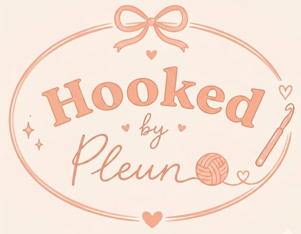

12 jaar · klein Brabants dorpje
gek op haken & turnen
"Ik haak gewoon omdat ik het ZO leuk vind. Als ik het zelf goed genoeg vind, weet ik dat anderen het ook leuk gaan vinden 💝"
Ik ben 12 jaar en woon in een klein dorpje in Brabant 🌸 Ik haak het allerliefst kleine schattige beestjes 🐱, scrunchies, mutsen en blobs. Naast haken zit ik op top-turnen en mijn grote droom is dat ik later wereldkampioen word 🥹 Ik teken en knutsel ook graag.
Een vriendin van me kon haken en heeft me de basissteken geleerd. Toen kon ik niet meer stoppen — ik ben filmpjes gaan kijken op YouTube en patronen gaan volgen, en zo werd ik steeds beter 🎀 Nu haak ik elke dag wel 2 of 3 uur. Sommige dingen lukken meteen, anderen doe ik 3× opnieuw 😅.
Kleine beestjes — vooral katjes, want ik heb er zelf 3 thuis en ze zijn ZO schattig 🐱. Verder scrunchies, mutsen en blobs. Het liefst met zacht garen zoals chenille (heerlijk om mee te werken!) en in lichte kleurtjes: lichtroze met wit, of koraal met beige ✨
Voor de meeste items volg ik een patroon van internet als basis, maar de kleuren, het garen en kleine accenten kies ik zelf. Elk item krijgt een handgeschreven labeltje met mijn handtekening en de datum 💝
De olifant-knuffel die ik gemaakt heb 🐘 en mijn muts. Daar ben ik echt heel trots op.
Ik post nieuwe items op mijn WhatsApp-kanaal 🎀Haak-shop🎀 — daar zie je als eerste wat er nieuw is. Soms stel ik daar ook vragen aan mijn volgers en dan kunnen ze antwoorden — dat vind ik heel leuk!
Hooked by Pleun (crochet by Pleun) is een hobby-shop. Pleun is minderjarig; alle bestellingen, betalingen en verzending lopen onder begeleiding en verantwoordelijkheid van haar ouders. We slaan geen klantgegevens op buiten WhatsApp-berichten. Geen tracking, geen cookies, geen accounts. Bij vragen of contact met haar ouders, stuur een berichtje via het bestelkanaal.